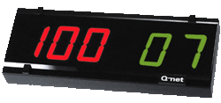
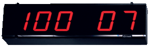
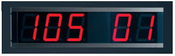
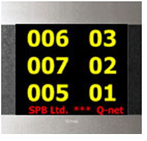

-
Область применения
Типы систем
Типы станций
Общее оборудование
Аксессуары
Транспортировочные средства
Программное обеспечение
-
Область применения
Типы систем
Регистраторы клиентов
Цифровые дисплеи
Клавиатуры вызова
Аксессуары
Программное обеспечение
ЦИФРОВЫЕ ДИСПЛЕИ:
1. Суммирующие (центральные) цифровые дисплеи.
Центральный дисплей QN-DG05 (QN-DG06);
Центральный дисплей QN-DG55 (QN-DG56);
Центральный дисплей QN-DC55 (QC-SDP5-002), QN-DС65, QN-DС75, QN-DC56, QN-DС66,
QN-DС76;
Центральный дисплей QN-DC92, QN-DC93, QN-DC94, QN-DC95;
2. Вызывные (кассовые) цифровые дисплеи.
1. СУММИРУЮЩИЕ (ЦЕНТРАЛЬНЫЕ) ЦИФРОВЫЕ ДИСПЛЕИ:
Центральные дисплеи отображают информацию о номере очередного клиента и о номере оператора, к которому необходимо подойти клиенту для обслуживания. Каждая из линий центрального дисплея разделена на две области. Левые три разряда предназначены для отображения номера очереди клиента, правые два разряда - для отображения номера оператора. Линии центрального дисплея могут объединяться в блоки до нескольких линий, количество которых зависит от конкретной модели, образовывая суммирующие дисплеи. В системах Q-Net Pro и Qcontrol Paleo, количество суммирующих дисплеев в системе - не ограничено, в остальных системах их количество ограничено возможностями коммуникационного оборудования. Применение нескольких суммирующих дисплеев целесообразно в профессиональных системах с размещением оборудования в больших помещениях, на разных этажах и прочих случах, когда имеется необходимость пространственного разброса оборудования. Суммирующие дисплеи могут навешиваться на конструкциях помещений, либо утапливаться в стенах. Обычно суммирующие дисплеи размещаются на видных местах в зонах ожидания обслуживания.
ЦЕНТРАЛЬНЫЙ ДИСПЛЕЙ QN-DG05, QN-DG06

Центральный дисплей QN-DG05 (точечная версия QN-DG06) выполнен в стиле Glassic и размещается над или спереди рабочего места оператора обслуживающей компании. Он предназначен для предоставления информации клиенту о месте предоставления услуг в системах Q-net Basic, Q-net Basic Plus, Q-Net Standard и Q-Net Pro.
Левые три разряда дисплея выполнены с использованием семисегментных цифровых индикаторов с красным цветом свечения. Правые два разряда дисплея выполнены с использованием семисегментных цифровых индикаторов с зеленым цветом свечения .
В момент вызова клиента индикаторы дисплея начинают мигать в течение времени, не превышающем 30 с. Конкретные временные установки мигания определяются при инсталляции системы при помощи программного обеспечения Q-Net. По прошествии этого времени индикаторы будут гореть в статическом режиме до момента завершения транзакции с клиентом (например до нажатия кнопки "Close" на специализированной клавиатуре вызова).
Опционально данные дисплеи могут использоваться в качестве вызывных дисплеев. При этом в правых двух разрядах информация будет отображаться постоянно с отображением номера оператора с момента входа оператора в систему до момента его выхода.
Основные параметры:
- количество разрядов для одной линии: 3+2=5;
- количество линий для одного суммирующего дисплея: не более трех;
- высота семисегментных индикаторов 57 мм;
- напряжение питания: =12 В;
- потребляемый ток одной линией: не более 0,5 А;
- протокол обмена данными: RS485/RS232.
Размеры:
Высота: 160 мм
Ширина: 320 мм
Глубина: 50 мм
ЦЕНТРАЛЬНЫЙ ДИСПЛЕЙ QN-DG55 (QN-DG56)

Центральный дисплей QN-DG55 (точечная версия QN-DG56) выполнен в стиле Glassic и предназначен для предоставления информации клиенту о месте предоставления услуг в системах Q-net Basic, Q-net Basic Plus, Q-Net Standard и Q-Net Pro.
Все разряды дисплея выполнены с использованием семисегментных цифровых индикаторов с красным цветом свечения.
В момент вызова клиента индикаторы дисплея начинают мигать в течение времени, не превышающем 10 с. Конкретные временные установки мигания определяются при инсталляции системы при помощи программного обеспечения Q-Net. По прошествии этого времени индикаторы будут гореть в статическом режиме до момента завершения транзакции с клиентом (например до нажатия кнопки "Close" на специализированной клавиатуре вызова).
Основные параметры:
- количество разрядов для одной линии: 3+2=5;
- количество линий для одного суммирующего дисплея: не более трех;
- высота семисегментных индикаторов 100 мм;
- напряжение питания: =12 В;
- потребляемый ток одной линией: не более 1,0 А;
- протокол обмена данными: RS485/RS232.
Размеры:
Высота: 185 мм
Ширина: 605 мм
Глубина: 70 мм
ЦЕНТРАЛЬНЫЙ ДИСПЛЕЙ QN-DС55 (QC-SDP5-002), QN-DС65, QN-DС75, QN-DС56, QN-DС66, QN-DС76

Центральный дисплей QN-DC55, точечная версия QN-DC56 (аналог QC-SDP5) выполнен в стиле Classic и предназначен для предоставления информации клиенту о месте предоставления услуг в системах Q-net Basic Plus, Q-Net Standard и Q-Net Pro, QControl Paleo.
Все разряды дисплея выполнены с использованием семисегментных цифровых индикаторов с красным либо зеленым цветом свечения.
В момент вызова клиента индикаторы дисплея начинают мигать в течение времени, не превышающем 30 с. Конкретные временные установки мигания определяются при инсталляции системы при помощи программного обеспечения Q-Net. По прошествии этого времени индикаторы будут гореть в статическом режиме до момента завершения транзакции с клиентом (например до нажатия кнопки "Close" на специализированной клавиатуре вызова).
Основные параметры:
- количество разрядов для одной линии: 3+2=5;
- количество линий для одного суммирующего дисплея: не более трех;
- высота семисегментных индикаторов 100 мм;
- напряжение питания: =12 В;
- потребляемый ток одной линией: не более 1,5 А;
- протокол обмена данными: RS485/RS232.
Размеры:
Высота: 196 мм
Ширина: 670 мм
Глубина: 50 мм
Модификации суммирующего дисплея:
- 2 линии: QN-DC65 (7-сегментный), QN-DC66 (точечная матрица);
- 3 линии: QN-DC75 (7-сегментный), QN-DC76 (точечная матрица).
ЦЕНТРАЛЬНЫЙ ДИСПЛЕЙ QN-DC92, QN-DC93, QN-DC94, QN-DC95

LCD дисплеи QN-DC92 (19"), QN-DC93 (37"), QN-DC94 (37" с предустановленным медиа-плейером) и QN-DC95 (37" портретная оринтация экрана) имеют стильный дизайн в формате Сlassic. На них может отображаться информация о номере очереди клиента, номере оператора, а также дополнительная информация, отображаемая в виде бегущей строки, либо слайд-шоу в системах Q-Net Standard и Q-Net Pro.
Эти дисплеи работают под управлением встроенного контроллера и включаются в состав системы посредством TCP/IP протокола.
Для проигрывания медиа файлов, просмотра телевизионных передач, а также отображения стандартной информации с одновременным отображением бегущей строки данные дисплеи могут обеспечиваться медиа-плейером, который является опцией (QN-SH06). Для запуска данного програмного обеспечения необходим персональный компьютер.
[1] 2